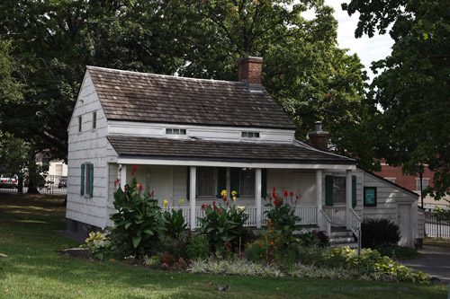
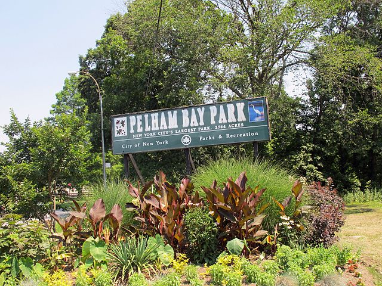
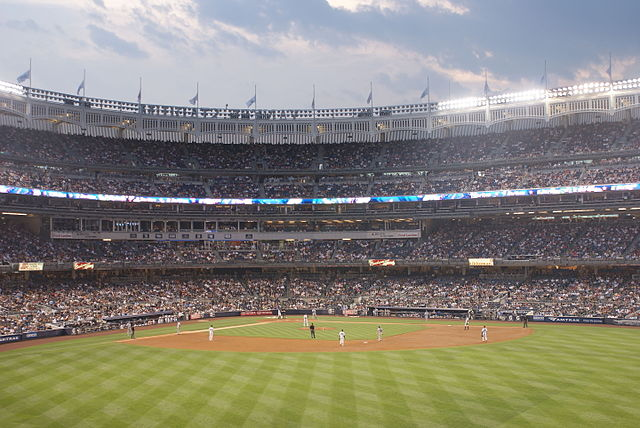

People all around the world know the Bronx as the home of the New York Yankees, the Bronx Zoo and the New York Botanical Garden-not to mention as the birthplace of hip-hop. Look deeper and you'll discover the quaint maritime village of City Island, the cultural attractions of Fordham and Belmont, aka the "real Little Italy," centered on the restaurants and cafes of Arthur Avenue. Grand Concourse, in the South Bronx, is full of art deco marvels.
Interesting facts about The Bronx-Hip Hop was born in The Bronx.
-Morrisania and Morris Avenue get their names from the Morris family of the Bronx of which Lewis Morris was one of the signers of the Declaration of Independence.
-The Bronx Library Center in Fordham has the distinct honor of being the FIRST Green / LEED Certified municipal building in the City of New York.
-Pelham Bay Park (over 3x bigger than Central Park) is one reason why the Bronx is the city's greenest borough.
-From the Bronx, you can get to Manhattan by car from 10 bridges.
-The Bronx was part of Westchester County until the western part of the Bronx was annexed to New York City in 1874.
Edgar Allen Poe Cottage - Edgar Allen Poe (January 19, 1809 to October 7, 1849) was an American writer, editor, and literary critic. Poe is best known for his poetry and short stories, particularly his tales of mysteryand the macabre. The Bronx County Historical Society has administered the Edgar Allan Poe Cottage as an historic house museum since 1975. The cottage is a small wooden farmhouse built about 1812 and is located at Kingsbridge Road and the Grand Concourse (2640 Grand Concourse at East Kingsbridge Road, Bronx NY 10458).
Pelham Bay Park is a popular recreational area that is located in Pelham South near Bruckner Boulevard and Middletown Road. It is the city's largest park at 2,765 acres - three times of the sized of Central Park in Manhattan. Pelham Bay Park is accessible by car, bicycle and in some places by bus. Among the massive park's attractions are Orchard Beach, the Bartow-Pell Mansion Museum, and the recently renovated Pelham Bay Golf Course. It includes water playgrounds, a quarter-mile running track, baseball fields, basketball court and over
"Yankee Stadium, home to the 27-time World Series champion New York Yankees, was built in 2009 across the street from the old stadium. The new stadium has hosted numerous events including the most recent Yankees World Series in 2009, international soccer, college football and concerts. It is also year-round destination offering versatile space suitable for corporate events and conferences, trade shows, film shoots, fundraisers, awards dinners and social events.
